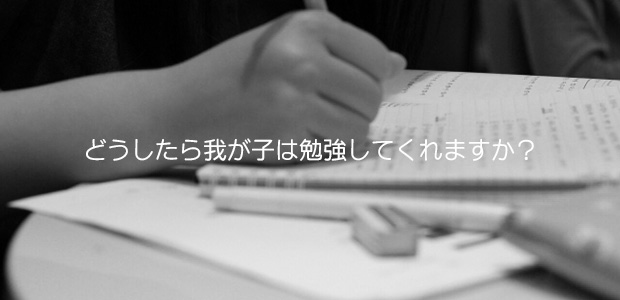

親が教えられるからこその皮肉
皆さん、こんにちは。
今週も迷えるお母様からのご質問がきましたので、お答えしたいと思います。
『親が教えようとしても聞く耳持ちません。どうしたら我が子は勉強してくれますか？』
なるほど。あるある～な質問ですよね。
このお母様は小学生４年生の息子さんがいるとのことですが、このご質問自体に私は二つほど突っ込みたいことがあります。
まず、勉強‘してくれますか？’って…どれだけ低姿勢なんですか！
勉強は子どもが親のためにやってあげるもの、ではないでしょう。
後述しますが、ここに親の勉強観の問題が見え隠れしています。
そしてもう一つ。‘親が教える’という部分。
これは父親に見られがちな傾向とも言えますが、特に理系出身の方なんかは算数で子どもがつまずいていたりすると、妙に張り切って親ばかりハイテンション（笑）なんていう光景がよく見られますね。
でも、これは良い方向にいけば子どもの意欲はぐんぐん伸びますが、多くの場合は逆効果になるケースに陥ります。
そもそも‘親が得意分野でしゃしゃり出る’ことほど子どもが「ウザッ…」と感じることはありません。
まあ、ハッキリとそのように自覚しないまでも、何となくありがた迷惑というか煙たいものを感じるのは間違いないでしょう。
私自身のケースも紹介します。
まず幼児～小学校低学年の頃。
「あなた、ピアノやりなさいよ」──母親からの言葉です。
母親は講師の資格を持っていて、自宅に生徒が大勢通っていたのです。
その時の私の返事は、即答で「ヤダ！」というものでした。
理由の一つは、「男がピアノとかなんかイメージと違う」という子ども染みたもの。
そしてもう一つは「母親が勧めたものへの反発」という二重構造でした。
いま思えば、楽器の一つでも弾きこなせる男はめちゃくちゃカッコイイ！…な～んてことには一切思い至らなかったわけですから、後悔することハンパなし…。
母親としては自分が教えるということにこだわっておらず、「外で習ってでもやった方がイイわよ」というスタンスだったのですが、当時の自分としては、もうやりたくない気持ちが固まってしまったのでした。
また小学６年生の頃には、こんなこともありました。
日曜日になると、大抵は幼稚園時代から仲の良い友人が遊びに来る習慣になっていたのですが、せっかくだから…ということで、うちの父親の算数教室を開催し、二人で受講するという時期がありました。
日記や講演会でもたびたび父親の話をさせてもらっていますが、うちの父はバリバリの理系でして、外見上はそうは見えないのですが、実際にやりとりしている私から見ると、内心は張り切っちゃってる感が滲み出てまして（苦笑）。
それがまた我々のありがた迷惑的な感情を増幅させていたような気がします。
親が得意だったり、勉強の内容を教えられるレベルにあるということが、皮肉にも子どものやる気を削いでしまっているケースは意外と多いのです。
こういう勉強観は困る！
一応ちゃんと断っておきますが、私はここで両親をディスっているわけではありません。
彼らは子どもに対して、あくまで良かれという気持ちで何かを勧めていたのですから。これ、本当はありがたいことなんです。
が、当の子どもには全く響いていなかった、ということ。それどころかありがた‘迷惑’になってしまったという事実。
こういう構造を客観的に理解しない限り、状況は変わらないのです。
厳しい言い方をすれば、親が心配したり、張り切ったり、なんとかしてやろうなんて思うからダメなんです。
よく、「勉強しなさいって言ってるんですけどね～」とか「声かけしてるのに響かないんですよね～」と言う方がいますが、これも同じ。
そしてこの声かけも、状況によっては非常に逆効果。
先述した‘親の勉強観’これがネガティブである場合が困る。
勉強をやらないと、進学とか就職とか将来において不利益がふりかかってくるもの！
だから仕方なく耐えてやらなければいけないもの！
そんな風に考えている人がまだまだ多いです。
本当にそうかどうか、その部分の議論については今回割愛しますが、少なくともそういう信念のもとに子どもに勉強を促したらどうなるか。
その声かけの内容も、
「ゲームなんかして。もう宿題終わったの？」
「やらないと後で困るわよ」
「先に勉強しないとマンガ取り上げるわよ」
など、どう考えてもやる気の起こりようがない言い方になるに決まっていますし、家庭内全体で‘勉強はイヤなもの’という間違った勉強観を共有してしまうという、最悪なスパイラルに陥ります。
さらに、人によっては
「お願いだから勉強して」
「成績上がったら、お小遣いアップするわよ」
「アンタが勉強しないと私がパパに怒られるのよ」
という言い方をしてしまう場合もあります。
勉強しないと困るのはアナタ。それならまだマシで、これでは‘勉強してくれないと私が困る’というワケのわからないメッセージとなってしまいます。
そして最悪の場合、「仕方ないから勉強してやるよ」と、そんな態度を子どもから引き出してしまうのです。
質問者さんの「勉強してくれません」という言い方にダメ出ししたのは、以上のような危険な背景を孕んでいると考えたからです。
じゃあどうしたらいいのか？
うーん、長くなるからそれはまたにします。
もしくは所長か庄本氏がバトンタッチしてくれるかもしれません（笑）。